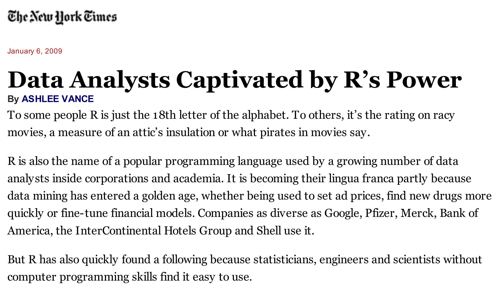
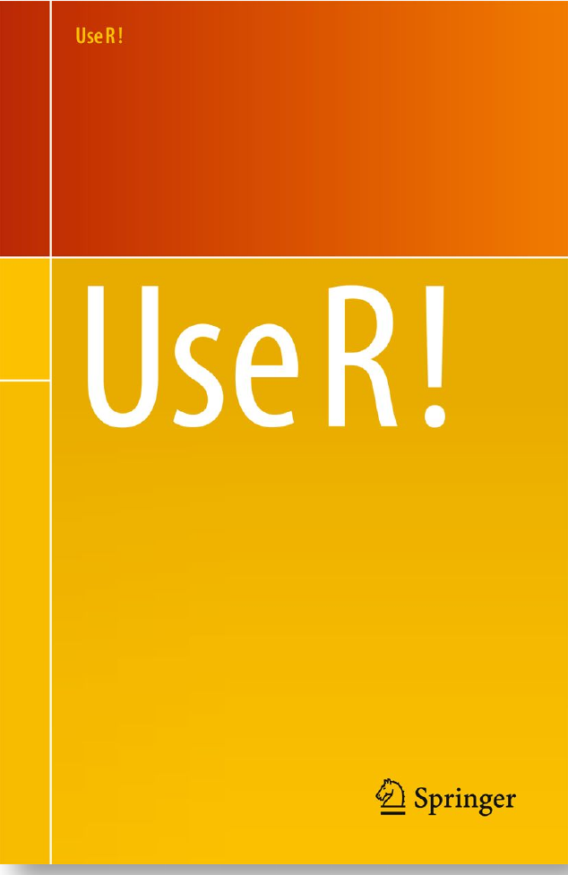
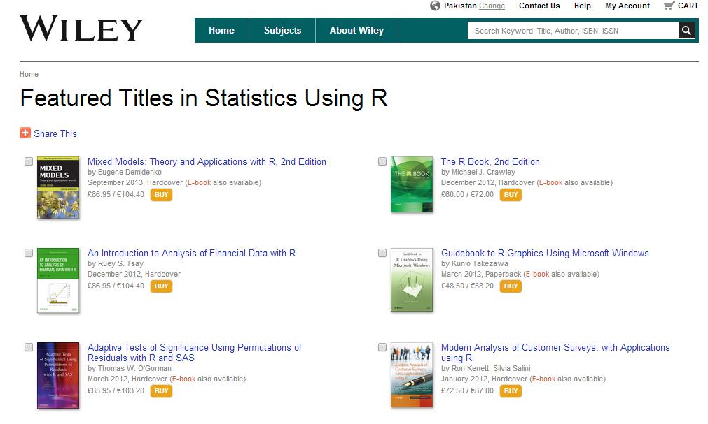
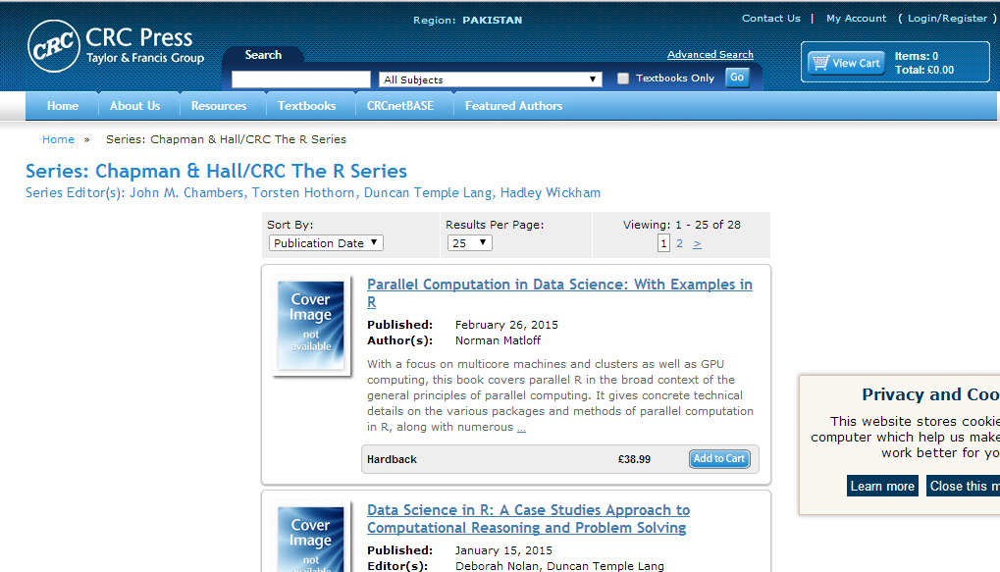
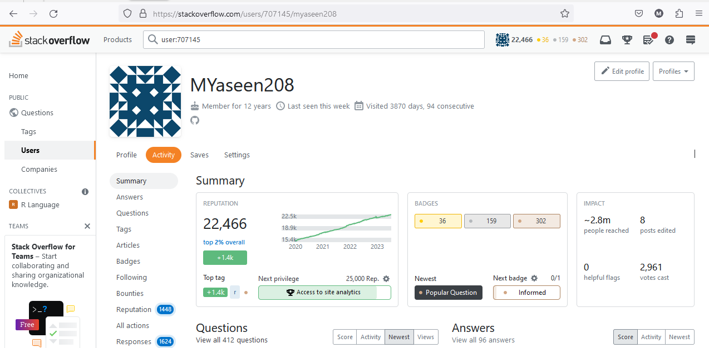

An Introduction to R Programming Language
Data -> Information -> Knowledge -> Wisdom
(https://myaseen208.com/)
Motivation
2009 New York Times Article
Springer
Wiley
CRC
O’Reilly

MYaseen208
MYaseen208
Introduction
Introduction
- A software developed by Statisticians around the World
- Free software, released under the General Public License (GPL)
- Open source, Very Flexible & makes you think
- 19,366 freely available packages (by 2023-04-18)
Introduction
- An Elegant & Comprehensive Statistical & Graphical programming language
- Contains Advanced Statistical routines
R&LaTeXwork together - seamlessly- Automated & Reproducible Research
- Good online documentation, robust & vibrant community
History
Ris a dialect of theSlanguageSlanguage was developed in 1976 by John Chambers et al. at Bell Laboratories
History

History
Rwas created in 1991 in New Zealand by Ross Ihaka & Robert Gentleman (R & R).Their experience developing
Ris documented in a 1996 JCGS paper.Martin Machler convinced Ross & Robert to use the GNU General Public License (GPL) to make
Rfree software.Since 1997, International
R-core team & 1000s of code writers and Statisticians happy to share their libraries! Awesome!
R Core Team
R Core Team
| Douglas Bates | Ross Ihaka | Thomas Lumley | Brian Ripley |
| John Chambers | Tomas Kalibera | Martin Maechler | Deepayan Sarkar |
| Peter Dalgaard | Michael Lawrence | Sebastian Meyer | Duncan Temple Lang |
| Robert Gentleman | Friedrich Leisch | Paul Murrell | Luke Tierney |
| Kurt Hornik | Uwe Ligges | Martyn Plummer | Simon Urbanek |
Getting & Launncing R
The main web site for the
RProject: www.r-project.orgComprehensive R Archive Network (CRAN) primary site: https://cran.r-project.org/
Capabilities of R
Capabilities of R
Provides a wide variety of statistical & graphical techniques, including:
State-of-the-art & Publication quality graphs
Classical Statistical Tests, ANOVA & Regression Analysis
Generalized, Linear, Mixed & Nonlinear Models
Time Series, Panel Data Analysis & Financial Data Modeling
Multivariate Analysis & Structural Equation Modeling (SEM)
Geographic Information System (GIS) & Spatial Analysis
Bayesian Methods & many more.
Help on R
Help on R
Once R is installed, there is a comprehensive built-in help system. At the program’s command prompt you can use any of the following:
Data in R
Data in R
There are many ways to get data into R. Few of them are:
Entering directly through console
Importing from an external file through
Rcommandsread.tableread.csvread_exceletc.
Basic Operations
Arithmetic Operations
| Operator | Description |
|---|---|
+ |
Addition |
- |
Subtraction |
* |
Multiplication |
/ |
Division |
^ or ** |
Exponentiation |
x%y |
Modulus (x mod y) 5%2 is 1 |
x%/%y |
Integer Division 5%/%2 is 2 |
Arithmetic Operations
Linear Models in R
Linear Models
'lm' is used to fit linear models, including multivariate ones. It can
be used to carry out regression, single stratum analysis of variance
and analysis of covariance (although 'aov' may provide a more
convenient interface for these).\[\\[0.2in]\]
Generalized Linear Models in R
Generalized Linear Models
'glm' is used to fit generalized linear models, specified by giving a
symbolic description of the linear predictor and a description of the
error distribution.\[\\[0.2in]\]
glm(formula, family = gaussian, data, weights, subset,
na.action, start = NULL, etastart, mustart, offset,
control = list(...), model = TRUE, method = "glm.fit",
x = FALSE, y = TRUE, singular.ok = TRUE, contrasts = NULL, ...)
glm.fit(x, y, weights = rep.int(1, nobs),
start = NULL, etastart = NULL, mustart = NULL,
offset = rep.int(0, nobs), family = gaussian(),
control = list(), intercept = TRUE, singular.ok = TRUE)
## S3 method for class 'glm'
weights(object, type = c("prior", "working"), ...)Linear Mixed Models in R
Linear Mixed Models
\[\\[0.2in]\]
Generalized Linear Mixed Models in R
Generalized Linear Mixed Models
Fit a generalized linear mixed-effects model (GLMM). Both fixed
effects and random effects are specified via the model 'formula'.\[\\[0.2in]\]
References
References
R Core Team (2023). R: A Language and Environment for Statistical Computing. R Foundation for Statistical Computing. Vienna, Austria. URL: http://www.R-project.org/.
Vance, A. (2009). “Data analysts captivated by R’s power”. In: New York Times 6.
Venables, W. N., D. M. Smith, R. D. C. Team, et al. (2002). An introduction to R.
Wickham, H. (2016). ggplot2: elegant graphics for data analysis. Springer-Verlag New York. ISBN: 978-3-319-24277-4. URL: http://ggplot2.org.
\(\color{green}{\textit{Muhammad Yaseen, PhD (Statistics, UNL-USA)}}\), (\(\color{red}{https://myaseen208.com/}\))